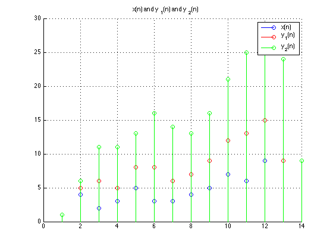

Homework 1 - Problem 2.22
x = [1 4 2 3 5 3 3 4 5 7 6 9]; h1 = [1 1]; h2 = [1 2 1]; h3 = [1/2 1/2]; h4 = [1/4 1/2 1/4]; h5 = [1/4 -1/2 1/2]; h6 = [1/2 -1/2]; figure(1); hold on; stem(x); stem(conv(h1, x), 'r'); stem(conv(h2, x), 'g'); legend('x(n)', 'y_1(n)', 'y_2(n)'); title('x(n) and y_1(n) and y_2(n)'); grid on; figure(2); hold on; stem(x); stem(conv(h3, x), 'r'); stem(conv(h4, x), 'g'); stem(conv(h5, x), 'k'); legend('x(n)', 'y_3(n)', 'y_4(n)', 'y_5(n)'); title('x(n) and y_3(n) and y_4(n) and y_5(n)'); grid on; figure(3); hold on; stem(x); stem(conv(h2, x), 'r'); stem(conv(h6, x), 'g'); legend('x(n)', 'y_2(n)', 'y_6(n)'); title('x(n) and y_2(n) and y_6(n)'); grid on;